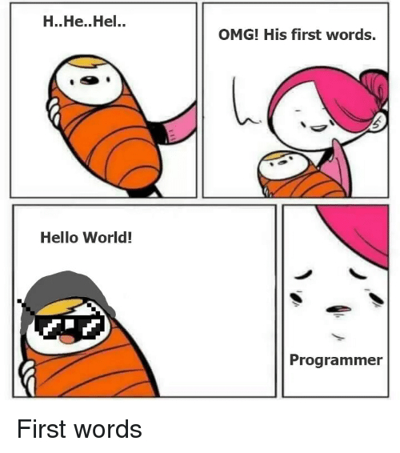

00. Link - Algorithms and data structures implemented in JavaScript with explanations and links to further readings
01. Link - Web Push Notifications
02. Link - WebAssembly – nadciąga rewolucja
03. Link - Writing WebAssembly By Hand
04. Link - GraphQL: Everything You Need to Know
05. Link - To Yarn and Back (to npm) Again
06. Link - Vuido - native desktop applications using Vue.js
07. Link - JavaScript Start-up Optimization
08. Link - From VanillaJS to Vue.js: A refactoring tale
09. Link - Workers in Node.js - initial implementation
10. Link - Build a Basic CRUD App with Vue.js and Node
11. Link - Make function to remote hosts seamlessly
